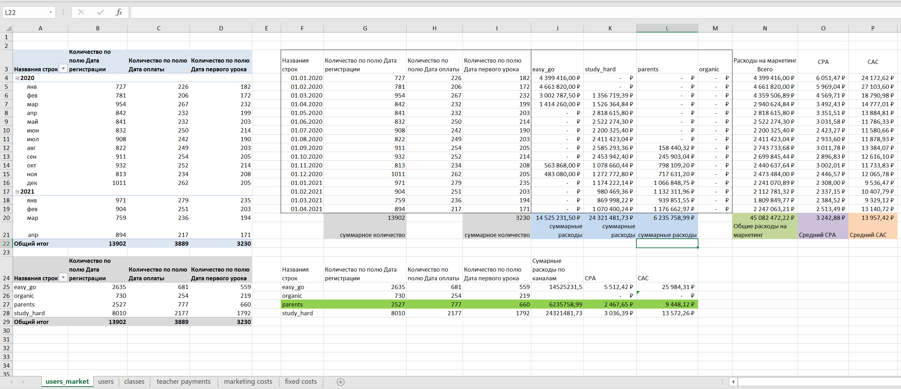

Детали проекта
Описание продукта
Продуктом является онлайн-школа, где ученики взаимодействуют с преподавателями в интерактивном формате. Компания ведет гибкую политику возвратов: деньги за непройденные уроки всегда можно вернуть в полном объеме. Продукт В январе 2020 года проект был запущен и были привлечены первые клиенты.
Структура продукта следующая:
Цель
Посчитать юнит-экономику продукта и найти "узкие" места.
После принятия решения о готовности проекта к масштабированию были обозначены следующие цели:
Дополнительные задачи от отдела маркетинга
Расчет юнит-экономики продукта и поиск "узких" мест
Гибкая политика возвратов говорит, что по-настоящему привлеченным клиент считается когда оплатил первый пройденный урок. Онлайн-школа зарабатывает на уроках, поэтому наш юнит - это 1 проведенный урок.
Перед тем как собрать калькулятор Ю-экономки необходимо рассчитать отдельные метрики. Алгоритм действий будет следующий:
Расчет CAC и CPA
Метрики CAC (Стоимость привлечения клиента) и CPA (стоимость конверсии в пользователя) отвечают на вопрос "Сколько мы тратим?".
Исходные данные users (рисунок 1) и marketing costs (рисунок 2). Лист users содержит id клиентов, каналы их привлечения, даты регистрации, оплаты и первого урока. Лист marketing costs содержит помесячные расходы на каналы привлечения.
С помощью листа users можно посчитать количество регистраций, оплат и первых уроков по месяцам и каналам. К этим расчетам добавим расходы на маркетинг по месяцам. Для этого проведем агрегацию по количеству пользователей по листу users c помощью сводной таблицы и объединим результаты с листом marketing costs.
После объединения данных сводной таблицы users и таблицы marketing costs рассчитываем метрики CPA и CAC помесячно. Зная помесячные расходы на маркетинг и количество регистраций/клиентов посчитаем средние CPA и CAC.
Подробнее о расчетах метрик
CPA (стоимость конверсии в пользователя, необязательно платящего) рассчитывается как расходы на маркетинг/количество регистраций. CAC (customer acquisition cost или совокупные затраты, требующиеся для конвертации из потенциального клиента в фактического покупателя) учитывая политику возврата средств будет рассчитываться как расходы на маркетинг/количество первых уроков. При расчете структуры юнит-экономики CAC(%) будет считаться как доля от LTR, и это те расходы которые мы несем один раз за "жизнь" клиента.
Нам также полезно знать какой из каналов привлечения дешевле всего, с точки зрения сопровождения клиента до регистрации, а потом и до первой покупки. Для этого на том же листе (Рисунок 3) сделаем еще одну сводную таблицу уже по каналам и рассчитаем метрики для каждого. Канал parents показал самую низкую стоимость привлечения пользователя и клиента.
Расчет Retention, среднего LTR и LTV
Метрики LTR (lifetime revenue) и LTV (lifetime value) отвечают на вопрос "Стоит ли оно того?".
На листе classes содержится информация обо всех уроках студентов. Для расчета Retention с помощью сводной таблицы вычислю количество уникальных студентов для каждого месяца, а также количество новых студентов в каждом месяце. Для определения того, является ли урок первым для пользователя, с помощью ВПР притяну данные о первом уроке с листа users. Дополнительно создаю классификатор, который будет проверять условие, является ли урок первым для конкретного студента (1 - "да", 0 - "нет").
Полученный результат введу в сводную таблицу, где раcсчитаю Retention, Lifetime(месяцы), Lifetime (Уроки), Среднюю интенсивность, Среднюю цену урока и LTR. По мере расчета метрик я буду формировать структуру юнит-экономики.
Подробнее о расчетах метрик
Retention рассчитаю как количество старых студентов текущего месяца / количество студентов всего за предыдущий месяц. Зная Retention каждого месяца можно посчитать средний Lifetime пользователя, выраженного в месяцах. Для этого воспользуюсь формулой 1/(1-Средн. Retention).
В случае расчета среднего Retention выбрано среднее геометрическое, так как подходит для процентных изменений и даст результат точнее. Также необходимо учитывать, что эта метрика подвержена сезонным факторам, поэтому при расчете лучше взять такой период, в котором каждый месяц учитывается только раз (расчетный период с 05.2020 по 04.2021).
Расчет Lifetime в уроках, требует предварительного расчета интенсивности помесячно и считается как Количество уроков/Количество всех студентов. Также учитываю сезонность и беру последние 12 месяцев. Lifetime(уроки) = Lifetime(месяцы) * Средняя интенсивность.
LTR рассчитывается как Lifetime(уроки) * Средняя стоимость урока. Уроки имеют различные стоимости: стандартная цена, скидка 20% и бесплатные (акционные) поэтому возьму среднее значение стоимости по всем пройденным урокам.
Расчет COGS (себестоимость реализованной продукции)
Метрики COGS(cost of goods sold) - Это полные прямые затраты, понесенные в процессе производства продукции.В нашем случае это будет зарплата учителей.
На листе teacher payments для каждого учителя указана зарплата по месяцам. Просуммирую расходы по каждому месяцу, и перенесу через транспонирование значения на ранее рассчитанный лист metrics. Рассчитав среднее ЗП учителя за 1 урок введу эту метрику в структуру юнит-экономики.
Подробнее о расчетах метрик
COGS-метрика в нашем случае - это зарплата учителя за 1 урок. Считается как Общие расходы на ЗП учителям / общее количество уроков. Для добавления ЗП учителя на 1 урок в структуру юнит-экономики нужно разделить на Среднюю цену урока, так как это те издержки, которые мы будем нести каждый раз проводя очередной урок.
Расчет Fixed costs и маржинальности
Fixed costs (условно постоянные издержки) включают в себе фонд оплаты труда (ФОТ) основной команды.
Примечание: в ФОТ не входят зарплаты учителей. В нашем проекте они не включены в штат организации и считаются отдельно.
На листе fixed costs указана информация по ФОТ за интересующий период (c 01.2020 по 04.2021). Перенесу эти значения на лист metrics для расчета fixed costs на 1 урок. Сформированные составляющие структуры юнит-экономики (CAC,COGS, Fixed costs) позволяют мне вывести общую маржу, составляющую 2,51%. Это низкий результат.
Подробнее о расчетах метрик
Fixed costs на 1 урок считается как Общие расходы на ФОТ / общее количество уроков. А для добавления этого показателя в структуру юнит-экономики его нужно разделить на Среднюю цену урока, так как это те издержки, которые мы будем нести каждый раз проводя очередной урок.
Теперь важно проверить, так ли плоха ситуация в динамике по месяцам. Выведу помесячную выручку (непризнанную) и зная ЗП учителей, ФОТ и CAC покажу распределение маржи помесячно.
Видно, что ФОТ за первый месяц составил почти в 2,5 раза больше чем признанная выручка, и это нормально, так как на старте почти все продукты работают в "минус". Похожая картина с зарплатами учителей.
Рассчитав для каждого месяца долю маржи видно, что в первый месяц мы работали в чудовищный минус, однако со временем ситуация выправлялась, а именно 13,86% маржи за крайний месяц против 2,51% маржи по периоду.
Промежуточные выводы
- Узким местом нашем юнит-экономики остается CAC.
- Самый эффективный канал привлечения - parents.
- За счет увеличения доли маркетинговых расходов на этот канал мы, скорее всего сможем снизить общий CAC.
- По результатам апреля 2021 года по показателям COGS и fixed costs даже перевыполнили план.
Упрощения при расчете юнит-экономики
Сборка калькулятора юнит-экономики
В качестве опорных данных использую ранее проведенные ранее расчеты юнит-экономики продукта. Для получения прогноза на будущий период определяю набор параметров:
Базовые значения параметров рассчитаю на исторических данных. Изучая расчеты юнит-экономики совместно с менеджером можно принять первые четыре месяца существования продукта установочными (период настройки процессов и набора клиентов). Так и поступим.
Прогноз необходимо сделать на 12 месяцев, для этого буду использовать данные за 12 месяцев с 05.2020 по 04.2021.
Расчет базовых значений параметров
Расчет статей юнит-экономики
Плановые расчетные показатели буду рассчитывать на основе фактических. Для удобства работы в калькуляторе для быстрого ответа на вопросы по типу "А что будет если CPA уменьшится на 10%?" правильным выбором будет использовать значения в относительном выражении. Для этого я настрою связь между столбцами Факт и План через столбец Изменения с возможностью внесения изменений в процентном выражении.
Настрою условное форматирование для столбца "Изменения", чтобы при изменении каких либо величин, они бы подсвечивались "зеленым" или "красным" в зависимости от прогнозируемого сценария.
Логика условного форматирования
Показатели для которых изменения в меньшую сторону для нас желательно:Примечание: расчет нового ФОТ и прогнозируемой маржинальности будет далее.
Построение прогноза
Для построения прогноза воспользуюсь ранее рассчитанными метриками Retention(месяцы) и Интенсивность. В качестве нерассчитываемых входных данных будет использоваться план маркетинга по привлечению новых студентов (лист План Маркетинга) и план департамента по ФОТ (лист Найм сотрудников).
Ниже представлен результат расчетов планового периода помесячно при внесении изменений в калькулятор.
Визуализация Юнит-экономики
Для отображения структуры юнит-экономики за фактический и плановый период построю два пайчарта и диаграмму роста.
Посоветовавшись с нашим продукт-менеджером, что в будущем году можно добиться следующих показателей:
Внося изменения в показатели, которые сообщим нам продукт-менеджер, расчетные значения были пересчитаны автоматически и отражены на созданных графиках (Анимация 3).
Логика построения визуализации
Возвращаясь к целям, поставленным на год:
Не забываем о дополнительных задачах от отдела маркетинга, а именно: помочь отделу маркетинга спланировать их касты и поставить цели в регистрации новых пользователей. В качестве вводной нам был дан план маркетинга по новым привлеченным студентам. (Вкладка "План маркетинга"). Добавлю там же план по регистрациям и ориентировочному бюджету. Эти данные я скопирую с главного листа (будущий год) и сделаю визуализацию.

Итоги
- Выход на 4000 активных студентов
- Удержание маржинальности на уровне выше 15%
- Выход на выручку выше 35 000 000 в месяц
- Увеличение зарплату преподавателей